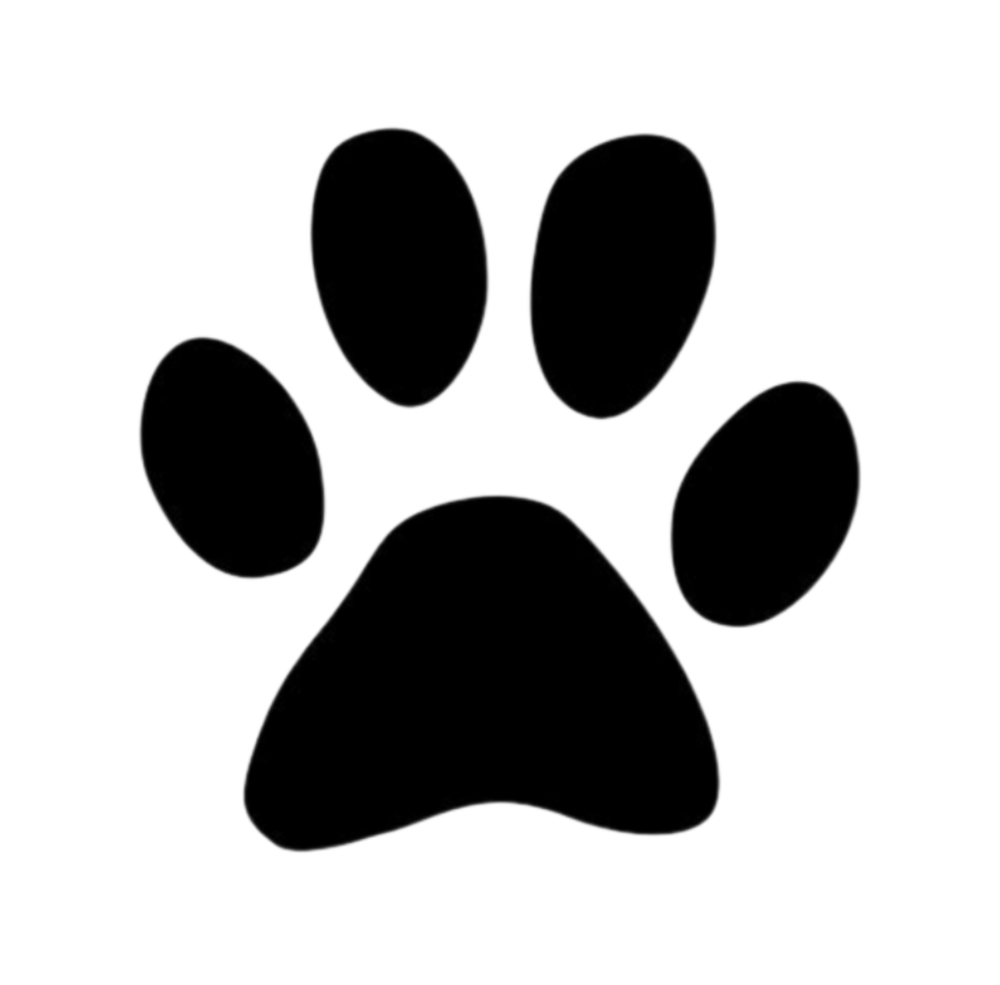

Ben-kaïl Azad
Créatif & cofondateur
Contacter RAFIKI'NDWICH
RAFIKI'NDWICHDerrière le comptoir
Une idée simple, beaucoup de cœur et l'envie de vous régaler.
Créatif & cofondateur
Contacter
Cuisine & accueil
WhatsApp
Bonne humeur officielle
ContacterVenez nous voir
📍 Lubumbashi, République démocratique du Congo
🕘 Lundi — Samedi · 10h00 — 20h00
Dimanche · 12h00 — 18h00
Une question ?
Pour une commande, une réservation ou simplement dire bonjour.
Nous écrire sur WhatsApp